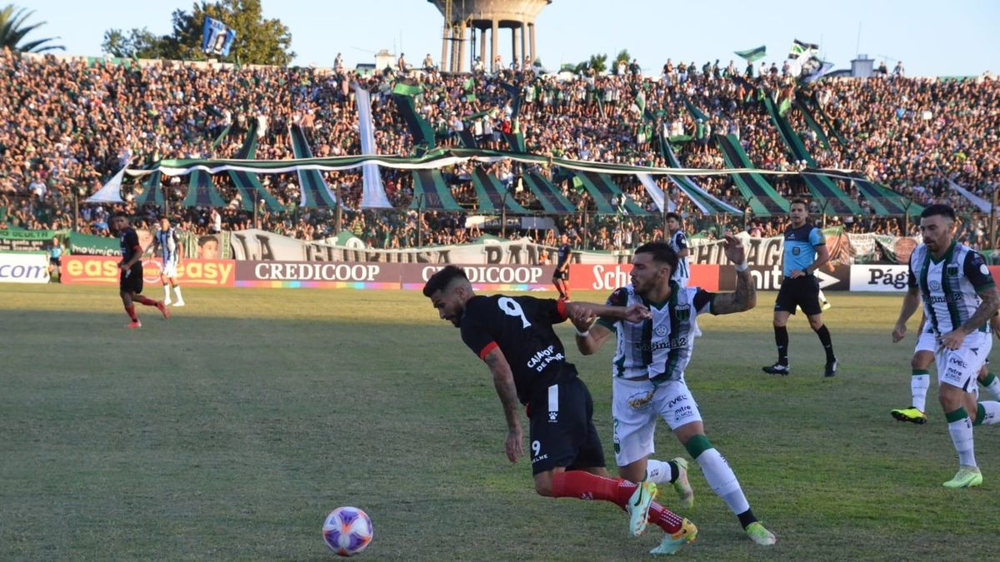
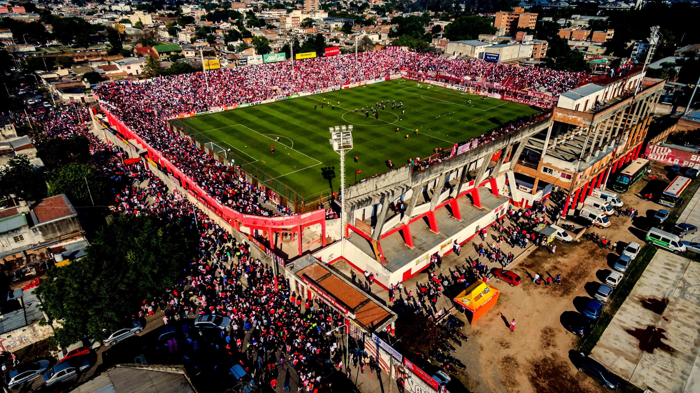
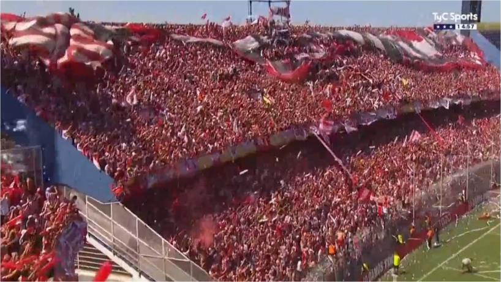
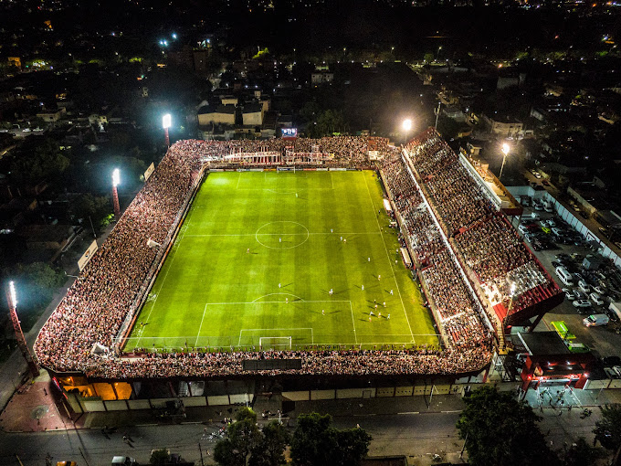
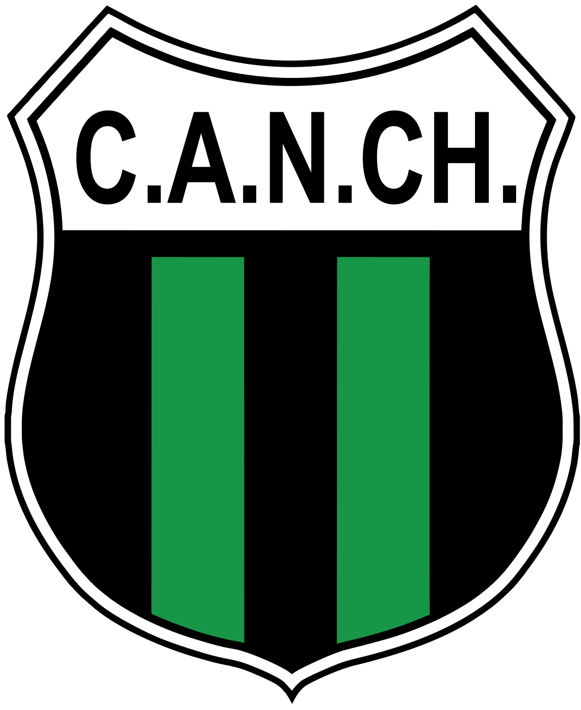

Primera
nacional

"Unite a nuestra comunidad de Facebook"


Seguí toda la información del club en el canal
oficial de WhatsApp. Noticias, resultados, promociones y mucho más.
Fotos, recuerdos y el sentimiento puro del hincha.
Hacé click
en el
de
tus fotos favoritas.
"No se explica, se siente. Desde los 5 años yendo a la Bolívar con mi viejo. San Martín es mi vida."
"Reviví el recibimiento contra Sarmiento de Junin."

El club más convocante del norte
¿Sabías que el primer estadio estuvo ubicado en la zona de las actuales calles Alberdi y Las Heras?

Vista desde arriba
@jorgefdiaz

Escuchá al Santo donde quiera que estés
Transmisión oficial disponible en días de partido
Descarga la app de LPF PLAY haciendo click aquíNo hay vivos programados actualmente.